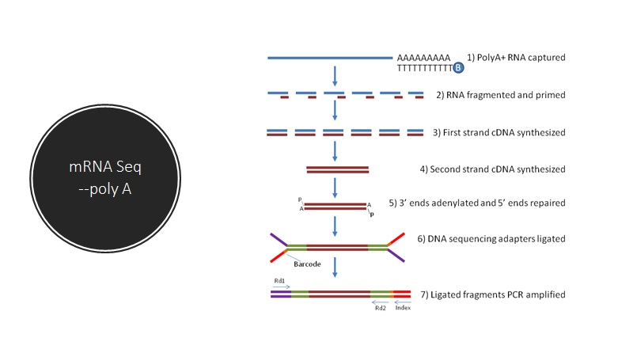
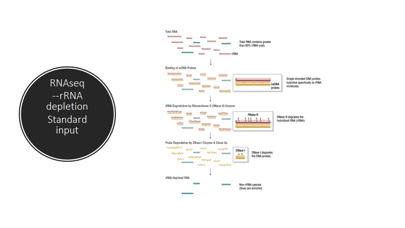
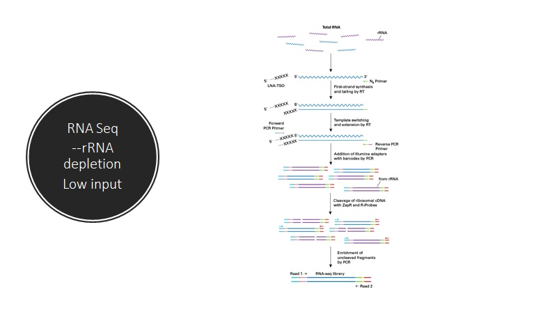
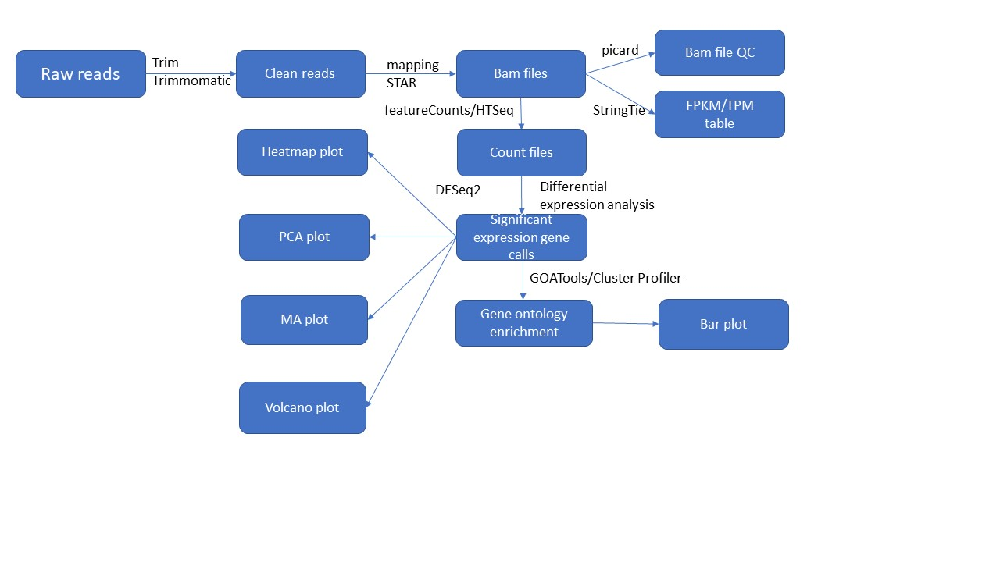

We have employed our RNA-Seq Analysis Pipeline, assembled after rigorous validation of best components of various computational tools for transcriptome assembly and differential expression analysis of the RNA-Seq data, extended by our in-house computational methods.
2 Background
2.1 Experimental Process
Please find below the figures explaining the experimental process of RNA-Seq. RNA-Seq experimental process can be done using one of the following three options.
2.1.1. RNASeq - Poly-A technique
The Poly-A selection method requires high quality RNA (RIN >7) which is suitable for studying gene expression. Note that non-coding RNA will not be included in this method. To understand the process, please refer to the picture below.

2.1.2. RNASeq --rRNA depletion Standard Input
This method is mainly used for low quality RNA (RIN values < 7). Non-coding RNA is commonly found in data for this method. NEBNext and TruSeq kits can be used for this method. To know more on the method, please look at the picture below.

2.1.3. RNASeq --rRNA depletion Low Input
The Takara Bio kit will be used for this method. RNA input ( ~10 pg ) is very low. Both Poly-A and rRNA depletion can be applied in this kit. To understand the process, please refer to the picture below.

2.2 Bioinformatics Process
The picture below shows the bioinformatics pipeline used in the analysis of RNA-Seq data. FastQC (version v0.11.8) was applied to check the quality of raw reads. Trimmomatic (version v0.38) was applied to cut adaptors and trim low-quality bases with default setting. STAR Aligner version 2.7.1a was used to align the reads. Picard tools (version 2.20.4) was applied to mark duplicates of mapping. The StringTie version 2.0.4 was used to assemble the RNA-Seq alignments into potential transcripts. The featureCounts (version 1.6.0)/HTSeq was used to count mapped reads for genomic features such as genes, exons, promoter, gene bodies, genomic bins and chromosomal locations. The De-Seq2 (version 1.14.1) was used to do the differential analysis. The Gene Ontology Analysis was done using ClusterProfiler package in R. For more information on ClusterProfiler package, please refer to reference 7 in the References section.

3 Raw Data and Quality Control
This section shows the location of the Raw fastq files and the fastqc reports.
3.1 RNA-Seq Raw Data Files
The Fastq files from the sequencer downloaded for further analysis.
Click on the button below to find the Raw Data files for each of the samples.
3.2 Quality Control
A FastQC report is generated to spot errors that originate either in the sequencer or in the library. The report has various modules and an html report is generated at the end of the analysis. It shows a quick summary of the modules run and a quick evaluation of whether the results are normal (green tick), slightly abnormal (orange triangle) or very unusual (red cross). For more details about each module, please refer to the manual provided by Babraham bioinformatics.
For more details about each module, please refer to the manual provided by Babraham bioinformatics.
Select from the dropdown menu for FastQC Reports of each sample.
MultiQC helps to provide aggregate results from bioinformatics analyses of many samples into a single report. MultiQC v1.8 was used. For further information on this, please check the MultiQC website.
4 Mapping Files
The fastq files were mapped using STAR Aligner version 2.7.1a. To know more about STAR aligner, please refer to Reference 1 below.
Click on the button below to open the BAM files.
5 RNA Metrics
Picard (version 2.20.4) was used to collect metrics on the distribution of the bases within the transcripts. This tool calculates the total numbers and the fractions of nucleotides within specific genomic regions including untranslated regions (UTRs), introns, intergenic sequences (between discrete genes), and peptide-coding sequences (exons). This tool also determines the numbers of bases that pass quality filters specific to Illumina data (PF_BASES).
MultiQC helps to provide aggregate results from bioinformatics analyses of many samples into a single report. MultiQC v1.8 was used. For further information on this, please check the MultiQC website.
To view the folder with RNA Metrics results, Please click the button below.
6 FPKM
FPKM stands for Fragments Per Kilobase of transcript per Million mapped reads. It is a normalised estimation of gene expression based on the RNA-seq data. FPKM are calculated from the number of reads that mapped to each particular gene sequence taking into account the gene length and the sequencing depth. In this project, StringTie version 2.0.4 was used to calculate FPKM values. StringTie used a network flow algorithm and an optional de novo assembly to assemble complex data sets into transcripts. To know more about StringTie, please refer to Reference 2 below in the References section.
To view the folder with FPKM results, Please click the button below.
7 Feature Count
FeatureCounts is a highly efficient general-purpose read summarization program that counts mapped reads for genomic features such as genes, exons, promoter, gene bodies, genomic bins and chromosomal locations. It can be used to count both RNA-seq and genomic DNA-seq reads. This project used FeatureCounts(version 1.6.0).To know more about FeatureCounts software, please refer to reference 5 in the References section.
To view the folder with Feature Counts results, Please click the button below.
8 Differential Analysis
The differential analysis can be divided into two parts, namely
1. Data exploration and QA on gene expression
2. Quantification of differential expression and exploratory analysis
Part 1 includes Sample distribution, p-value distribution, Sample-to-Sample distance heatmaps and Principle component analysis. Part 2 includes MA-plot and Volcano Plot.
Part 1 - Data exploration and QA on gene expression
The Differential Analysis was done using De-Seq2(version 1.14.1) Software. To know more on De-Seq2, please refer to reference 4 in the References section.
1. Between Sample Distribution
Using normalized expression count, we visualized the between-sample distribution to contrast the distribution of gene-level expression on different samples.
2. P-value Distribution
Here we provide the histogram of p-values. A histogram of p-values is a bar graph of the number or proportion of p-values that fall within certain non-overlapping sub-intervals of [0, 1]. This simple graphic assessment can indicate when problems are present in the analysis. The most desirable shape for the p- value histogram is one in which the p-values are most dense near zero and become less dense as the p- values increase. This shape does not indicate any problem of the methods operating on p-values and suggests that several genes are differentially expressed, though they may not be statistically significant after adjusting for multiple testing.
3. Sample-to-Sample distance heatmap
A sample-to-sample distance heatmap reveals which samples are more closely related in terms of their gene expression profile. The rows and columns are arranged based on hierarchical clustering, so that samples with similar expression profile is positioned near to each other. The color of each show the level of similarity between samples. Usually, samples from the same condition tend to be clustered together because of their expression profile similarity.
4. Principle Component Analysis
Principle component analysis (PCA) is used to visualize covariates and batch effects. As a dimension reduction technique, PCA can determine the key features of high-dimensional datasets and, in the context of RNA-Seq analysis, clusters samples by groups of the most significantly dysregulated genes. The clustering is performed first on the most significant group, then progressively on the less significant group.
PCA is performed on genes with highest row variance. The PCA plot on the first component (clustering on the most significant group) should have a clear separation between groups. Alternatively, if samples from the same batch are clustered together, it is a sign for possible batch effect if samples are grouped based on their batch.
Part 2 - Quantification of differential expression and exploratory analysis
1. MA-Plot
To better interpret differentially expressed genes, we generated a MA-plot to obtain an overview of two sample group comparison. MA Plot is a two-dimensional scatter plot to visualize datasets. An MA-plot is a plot of log-fold change (M-values, i.e. the log of the ratio of level counts for each gene between two samples) against the log-average (A-values, i.e. the average level counts for each gene across the two samples). The MA-plot is a useful to visualize reproducibility between samples of an experiment. From a MA-plot one can see if normalization is needed.
2. Volcano Plot
Additionally, we generated a volcano plot summarizing both fold-change and a measure of statistical significance from a statistical test. It is a scatter-plot of the negative log10-transformed p-values from the gene-specific test (on the y-axis) against the log2 fold change (on the x-axis). The datapoint with low p-values (highly significant) and highly dysregulated appearing towards either upper left or upper right of the plot.
The figures of all the above analysis is presented below for each of the groups.
8.1 GroupA_vs_GroupB
Comparison of Samples was performed. The result files are available in 06.DE-GO-KEGG/GroupA_vs_GroupB_DE folder.
The significant genes, upregulated and downregulated genes can be viewed by clicking the respective buttons below.
The Between Sample Distribution, p-value distribution and Sample-to-Sample distance heatmap files are shown below. To view the PDF of the files, please click the respective buttons below.
The Sample-to-Sample distance heatmap on the gene-level, PCA plot and Volcano Plot are presented below. To view the PDF of the files, please click the repective button below.
The MA-plot is presented below. To view the PDF of the file, Please click the button below.
To view the results from DE-Seq2 software as such, please click the button blow.
9 Functional Analysis
The functional analysis helps to understand the functions and utilities of the biological systems. Genes that are differentially expressed are further subject to functional analysis. Functional Analysis was done using the ClusterProfiler package in R. To know more about ClusterProfiler, please refer to reference 7 in the References section.The analysis performed include:
1. Gene Ontology(GO) classification - Genes that are differentially expressed are classified based on the gene ontology classification system. The classification bar charts display the GO terms the differentially expressed genes belong to. Number on x-axis is the amount of differentially expressed gene belonging to each GO term.
2. Gene Ontology(GO) biological process enrichments
3. Gene Ontology(GO) molecular function enrichments
The figures of all the above analysis is presented below for each of the groups.
9.1 GroupA_vs_GroupB GO Analysis
The Gene Ontology analysis of genes is available by clicking the button below. The folder contains the Bar plots of Biological process, Cellular Component and Molecular Function. It also has the Gene Ontology Enrichment classification as well as KEGG Pathway classification.
10 Customized Analysis - Splicing
RNA splicing is a process that removes the intervening, non-coding sequences of genes (introns) from pre-mRNA and joins the protein-coding sequences (exons) together in order to enable translation of mRNA into a protein.
rMATS, Multivariate Analysis of Transcript Splicing (version 4.0.2) was used to detect alternative splicing events. The output consists of Alternative Splicing events derived from GTF and RNA. The events include Skipped Exon(SE), Alterinative 5' Splice Site(A5SS), Alterinative 3' Splice Site(A3SS), Mutually Exclusive exons(MXE) and Retained intron(RI). To know more on MATS, please refer to reference 8 in the References Section.
The results are available by clicking the button below.
The output of all possible alternative splicing events is available for each of the events below.
Click the button below to see the output of evaluation splicing with only reads that span splicing junctions.
Click the button below to see the output of splicing with reads that span splicing junctions and reads on target.
Click the button below to see the output of all possible alternative splicing events derived from GTF and RNA.
Click the button below to see the output of evaluation splicing with only reads that span splicing junctions from raw input.
Click the button below to see the output of splicing with reads that span splicing junctions and reads on target from raw input.